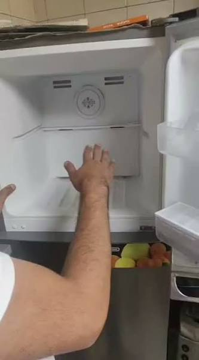
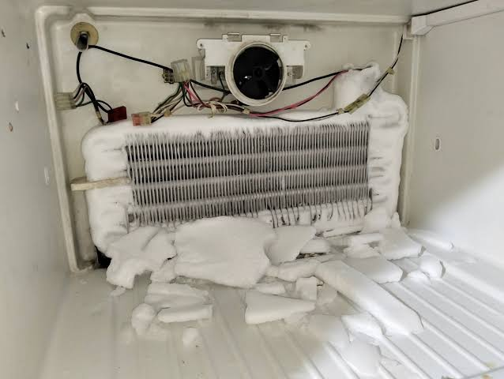
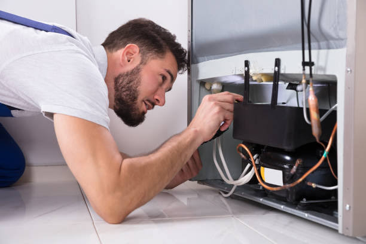
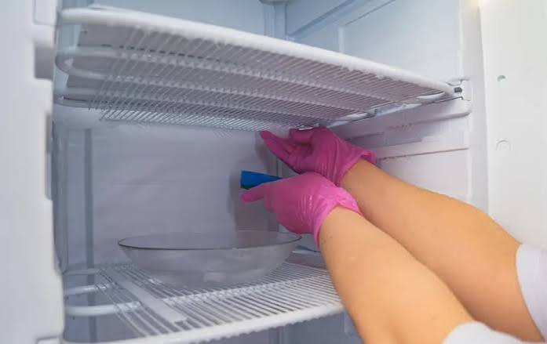
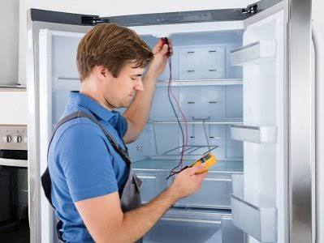

نصائح وإرشادات هندسية
مدونة المركز المعتمد لصيانة الثلاجات
مقالات حصرية، أسباب الأعطال المفاجئة، وطرق الحفاظ على كفاءة تبريد ثلاجتك لأطول عمر افتراضي.
أحدث المقالات والنصائح
دليلك الشامل لصيانة الثلاجات وحل المشاكل المنزلية
اختر المقال لقراءة التفاصيل الكاملة وتجنب تلف الأطعمة والأعطال المتكررة:





هل تواجه عطلاً معقداً وتحتاج لتدخل فوري؟
مهندسونا جاهزون للتحرك إلى منزلك في أي وقت لفحص وإصلاح ثلاجتك بضمان معتمد.